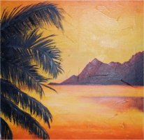
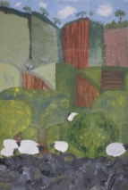

Miscellaneous Art:
The Shakespearean Theater in Lithia Park
by Natasha Cluff

A Selection of Paintings
by Kaylynn
Humming Bird
by Soren Beal Age 9

English Countryside
by Kira Beal
Goldilocks & The Three Bears
by Kira Beal Age 4
Sketches
by Nial Cluff Age 15
Kira's First Violin Recital November 17, 2002
Ammon, Kaylynn and Braden's Band
Dallas & Weston's Violin Recital
Shira
Weston playing violin
Dad playing his old Auto-Harp!!!
Hyrum playing his Recorder
Mom playing her harp for a crowd
The Fam in an Air Band

Melanie's Photos:
Misc. Photos:
"Family Haiku Poems"
by Soren Beal
Joseph
Joseph is so cute
He is as strong as an ox
And he�s cool ta boot!
Kira
Kira is the best
Her voice is so beautiful
She smells like a rose
Soren
Soren rides his bike
He rides the fastest, farthest
And he reads a lot!

Dane's First Solo
Kaylynn's Contortions
Dakota Learns to Crochet!
Shira Rides a Horse
Hyrum Works a Lasso
Learn Piano Online
Learn to Knit or Crochet Online